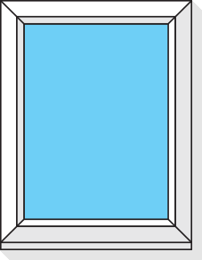
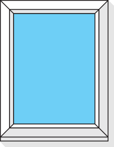
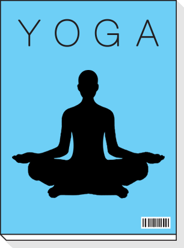
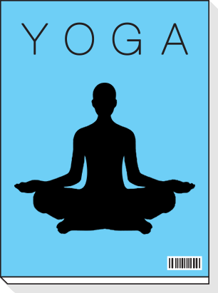

— А что если интернет подстроится
под меня?
Интернет сегодня — это не только информация и
технологии, это люди: их желания, предпочтения,
задачи. Люди — вот атомы, из которых на самом деле
состоит цифровая материя; и эти люди очень, очень разные.
Сегодня поиск умеет подстраиваться, помогая людям быстрее
приходить к тем решениям, которые им нужны.
Мы представляем Атом: совокупность инструментов, призванных научить интернет
подстраиваться под разных людей, которые им нужны.
Весь сайт в одном видео
Максим
Алексей Быков
Георгий И. Дауге
Очень дорожит редкими отпусками и
превыше всего ценит
комфорт и каче-
ство обслуживания.
Очень дорожит редкими отпусками и
превыше всего ценит
комфорт и каче-
ство обслуживания.
Очень дорожит редкими отпусками и
превыше всего ценит
комфорт и каче-
ство обслуживания.
Юра сразу покупает тур: в его ситуации так очевидно проще.
Основные вводные - приемлемого качества.
Отель центре тайской жизни: чтобы и еда,
и качественный пляж, достопримечательности, и рестораны.


 

Юра носит линзы, и у него как раз заканчивается запас
- нужно купить новые.
Отель центре тайской жизни: чтобы и еда, и качественный пляж,
достопримечательности, и рестораны.


Что Юра точно не хочет упустить, так это возможность попробовать
местную еду. Каждый вечер они с женой -
Каждый вечер они с женой - иногда с детьми, иногда вдвоем -
отправляют в новый местный ресторан.
 

Максим
Алексей Быков
Георгий И. Дауге
Интернет сегодня — это не только информация и технологии,
это люди: их желания, предпочтения, задачи. Люди — вот атомы, из которых
на самом деле состоит цифровая материя; и эти люди очень, очень разные.
Теперь посмотрите, как планировали путешествие в Таи
ланд Алексей Быков и Георгий И. Дауге.
Помощь Обратная связь © 2017 ООО «Яндекс»